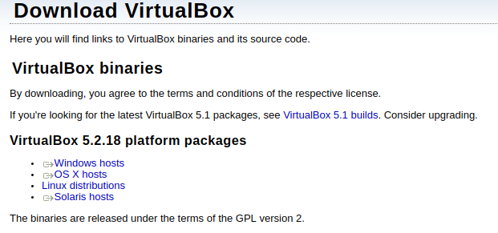
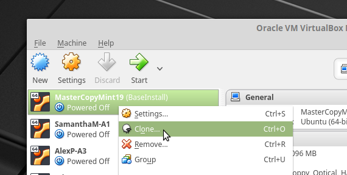
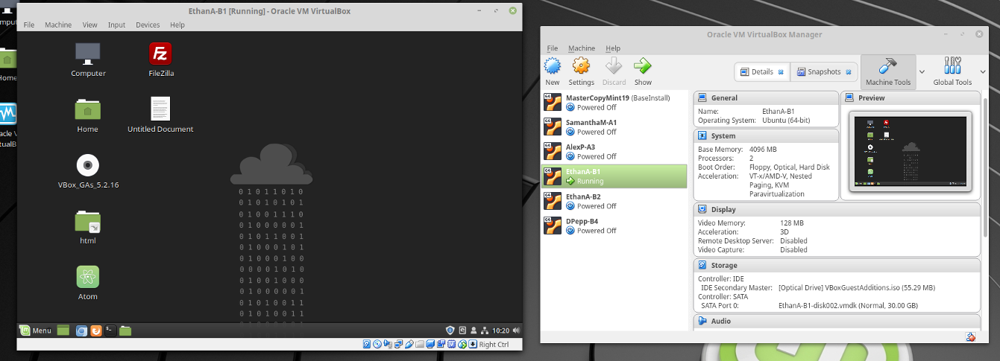
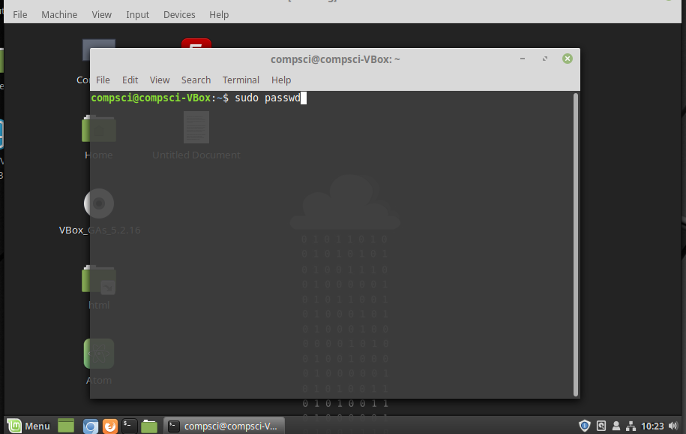
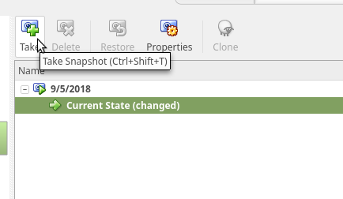
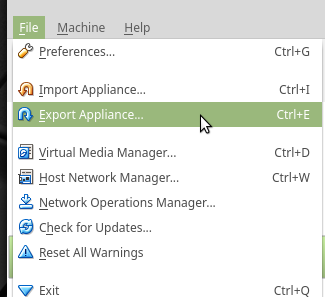

Project 1 - Virtual Machines
Created by Ethan A
Getting a Virtual Machine Working
First I downloaded Oracle VirtualBox on https://www.virtualbox.org/wiki/Downloads

Then I imported a master copy and cloned it so if the appliance breaks, I can simply create another

I named the new copy "EthanA-B1" and ran it. I installed a few programs like Atom and FileZilla

Don't forget to change the password so no one can mess with our stuff!

You can take a snapshot of the operating system so you can use a fixed version if it ever breaks. It's particularly useful to take one before you install risky software so you're not screwed if it breaks anything.

You can export the appliance as a .ova, which means you can import it in any other virtual machine. You could also use it as a backup, or import it on your personal computer.
 |
West Ada School District |
 |
I go to Rocky Mountain High School |
 |
I go to Centennial High School for my Computer Science and Web Design classes |